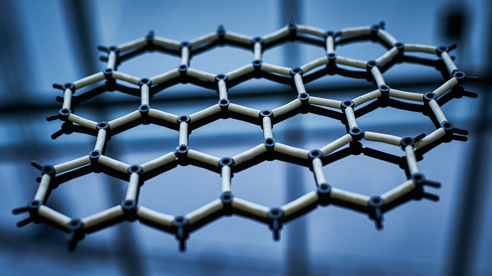

The NanoDrop Filter
There are 3 main problems with water: Microbes, Bacteria and Viruses, and Chemicals. Our filter solves all three.



There are 3 main problems with water: Microbes, Bacteria and Viruses, and Chemicals. Our filter solves all three.
The NanoDrop water filter is made of three composite nanomaterials. When the water goes through the nanometer scale filter, the ions go inside the water, pull out the arsenic, mercury, bacteria, viruses, and everything else contaminating the water. The bigger contaminants won’t get through the 1 - 5 micron holes in the filter.
Over 800 million people in the world today don’t have access to clean drinking water. The NanoDrop filter can be used in these communities, in big or small bodies of water to clean and purify the water, giving access to water for the communities. It is very inexpensive, costing just $3/square foot.
There are 4 materials needed for the filter: graphene and 3 different nanoparticles (silver ions, bronze ions and salt ions)
The body of the filter will be graphene. Graphene is a cheap, easily produced material that can filter water. It is a natural hydrophobic material, which means it naturally repels water. Because of this, when small holes 1 - 5 microns in size are made in the material which will be 3D printed, it filters pretty easily compared to other materials. Graphene only contributes to about $0.03 of the cost per square foot, , while 3D printing it costs about $0.17.
The 3 different nanoparticles work as so: Once the water enters the filter, it goes through the salt ions first. The salt ions kill off all bacteria and viruses inside of the water. Next, the water goes through the silver ions, removing the chemicals such as dye inside of the water. The water goes through the bronze ions last, and they enter the water to remove the toxic microbes inside the water. Once the water reaches the graphene at the end, it is separated into the drinkable water and the chemicals and undrinkable water. Only the drinkable water particles are small enough to fit through the filter, meaning once the water reaches the other end of the filter, it’s clean and drinkable. This accounts for about $1 of the price.
The remaining price per foot goes into actually assembling the filter and getting it to where it needs to be, whether this is a remote area in an impoverished community or a store to be purchased. The cost to maintain this filter is very cheap as the graphene doesn’t need cleaning. The filter needs to be replaced every 1 - 3 years depending on how much it’s used and how unclean the water is.